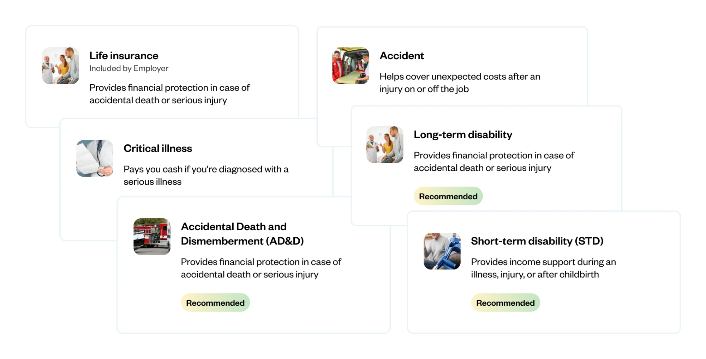
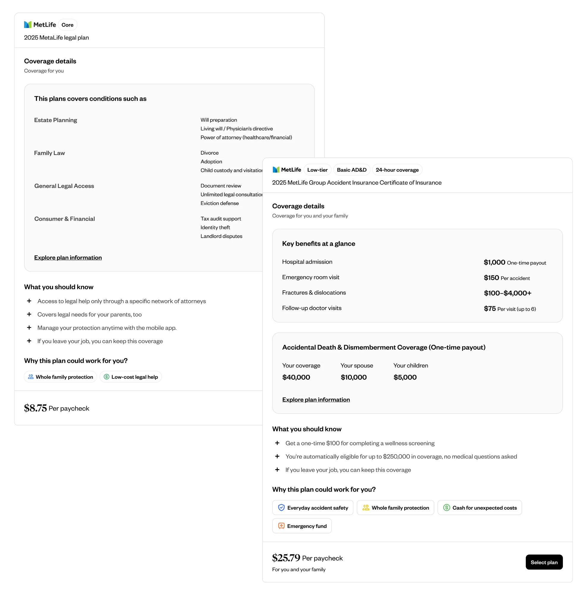
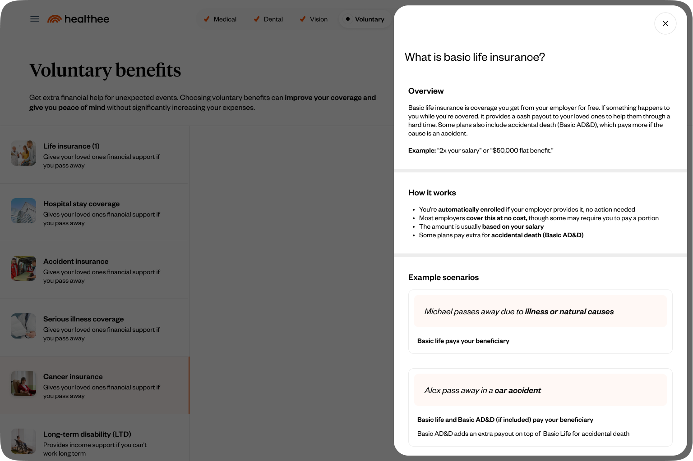
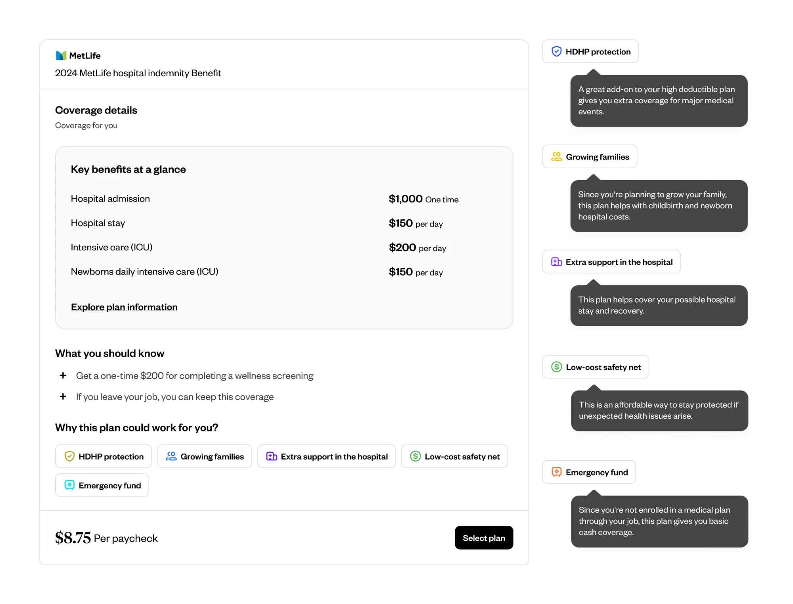

Voluntary benefits
Turning overlooked benefits into clear, personalized choices

The challenge
Expanded the decision-support tool to support 15 Voluntary Benefits domains, each with distinct coverage structures, eligibility rules, plan conditions, and employer contribution models.
The challenge was to create a cohesive experience that made these complex options easier to navigate, understand, and evaluate.
01
Navigation & discovery
Designed a navigation model that enabled users to move between plans while keeping track of viewed, selected, and automatically included options.
Key information was surfaced upfront to encourage exploration, while the flow required users to progress through the section rather than skip it entirely.
02
A flexible information structure
Created a consistent framework for presenting diverse benefit plans, adapting to differences in coverage, conditions, pricing, and employer contributions without losing clarity or consistency.

03
Education through real-life scenarios
Translated complex insurance terms and coverage details into plain-language explanations and relatable scenarios, helping employees understand what each benefit covers and how it could support them in real-life situations.
Illustrated potential payouts alongside everyday expenses to make the value of each benefit more tangible and easier to evaluate.

04
Personalized recommendations
Designed recommendation tags that explain why each plan may be a good fit, connecting what we know about the employee’s lifestyle and financial risk factors to relevant benefit options.
Rather than simply presenting a recommendation, the experience makes its relevance clear, helping employees understand why a plan is worth considering.

Impact
40% of registered users selected at least one Voluntary Benefit.